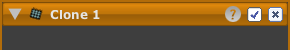

 複製ツールでは写真の一部を別の部分にコピーできます。写真の欠点をから取り除くのに使えます。
複製ツールはスポット ツールの汎用版です。
他のツールとは違う特徴として、複製ツールには最低ひとつの領域が必要です。ただし、領域は反転できません。
註: ひとつの複製ツールは複製の領域を持つことができます。(それぞれが十字カーソルを持ちます。) その利点としては、同じブレンド モード・不透明度・色/輝度の選択を共有できることが挙げられます。